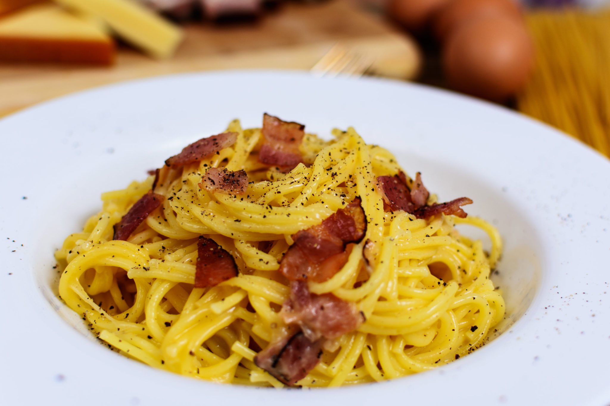

Spaghetti o rigatoni alla carbonara
Ingredienti
Di seguito tutti gli incredienti per preparare il piatto per due persone
- 200 grammi di spaghetti o di rigatoni (Rummo o Molisana);
- 3 uova pasta gialla;
- 50 grammi di guanciale tagliato spesso;
- 100 grammi di pecorino romano da grattuggiare;
- Pepe in grani.
Preparazione
- Mettere in ebolizione l'acqua salata;
- In una bacinella rompere le tre uova e versare solo i tuorli;
- Coprire i tuorli completamente con il pecorino grattugiato e pepe tritato;
- Buttare gli spaghetti e cuocere pochi secondi in meno del tempo di cottura indicato;
- Cuocere il guanciale sino a quando è croccante;
- Versare il grasso del guanciale nella bacinella e mescolare tutto (se necessario aiutarsi con mezzo cucchiaio di acqua di cottura);
- Scolare la pasta e attendere circa un minuto prima di versarla nella bacinella per evitare l'effetto frittata;
- Mescolare tutto e aggiungere pecorino,pepe e guangiale.